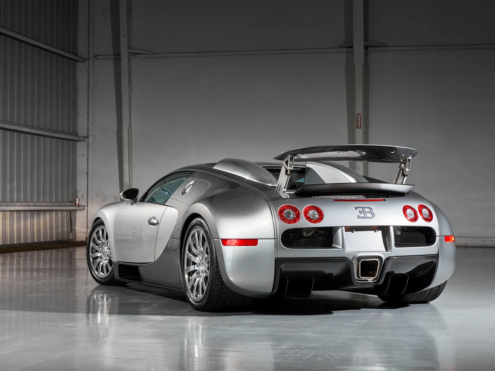
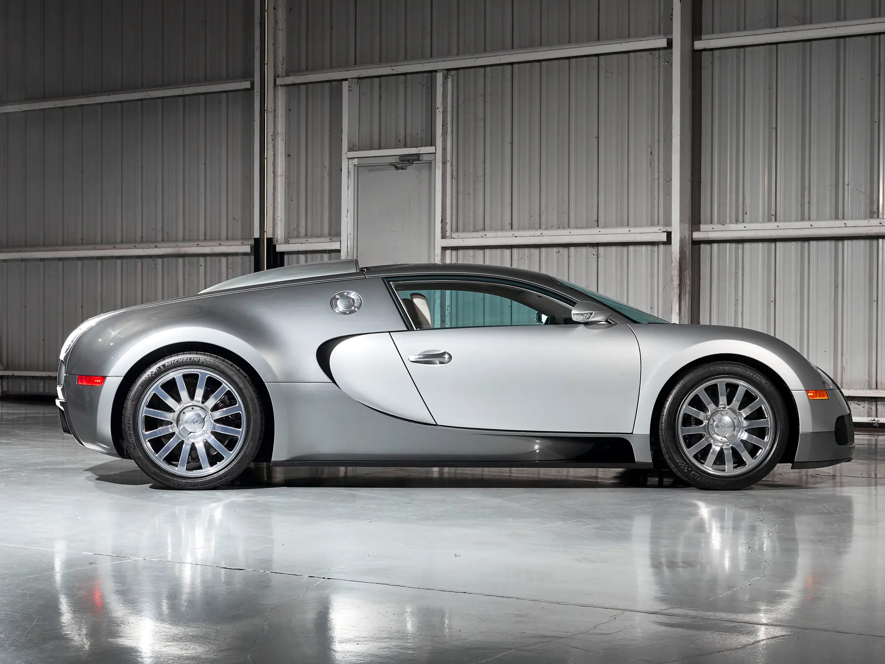

The Bugatti Veyron redefined what a road car could be. When it was introduced in 2005, it did not simply compete with existing supercars — it rendered them obsolete. Conceived under the ambitious vision of Ferdinand Piëch and brought to life by the engineering power of Volkswagen Group, the Veyron was designed to achieve what many believed was impossible. Powered by an 8.0-litre quad-turbocharged W16 engine producing over 1,000 horsepower, it became the first production car to exceed 250 mph, setting a new benchmark for speed and engineering capability.
What made the Veyron truly revolutionary was not just its raw performance, but the technology required to make that performance usable. Its dual-clutch transmission was developed specifically to handle unprecedented torque levels, while its permanent all-wheel-drive system ensured stability under extreme acceleration. The carbon fibre monocoque chassis provided the structural rigidity necessary for such speeds, paired with advanced aerodynamics that could dynamically adjust depending on driving conditions.

One of its most iconic features was the active aerodynamics system, including the deployable rear wing that doubled as an air brake under heavy deceleration. At high speeds, the car would lower itself to reduce drag, while at lower speeds it would raise for increased stability and cooling.
The Veyron was not just a fast car, it was a statement of engineering ambition. Backed by Volkswagen’s resources and driven by Piëch’s relentless vision, it marked the beginning of the modern hypercar era, proving that extreme speed could be combined with luxury, reliability, and everyday usability, forcing the entire industry to rethink what was possible.
| Engine | 8.0L Quad-Turbo W16 |
| Power | 987bhp |
| Weight | 1888kg |
| Transmission | 7-speed DCT |
| 0-62 | 2.4 s |
| Top Speed | 253mph |
| Year | 2005 |